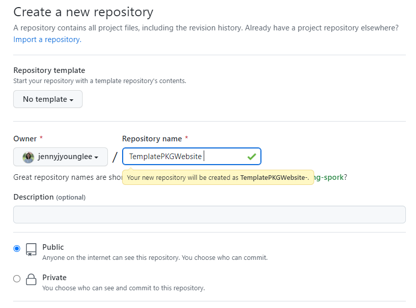
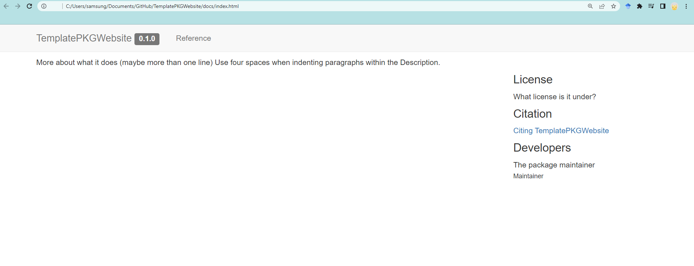
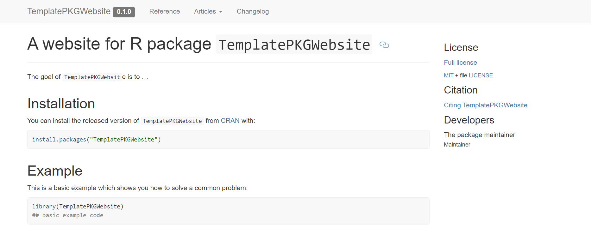
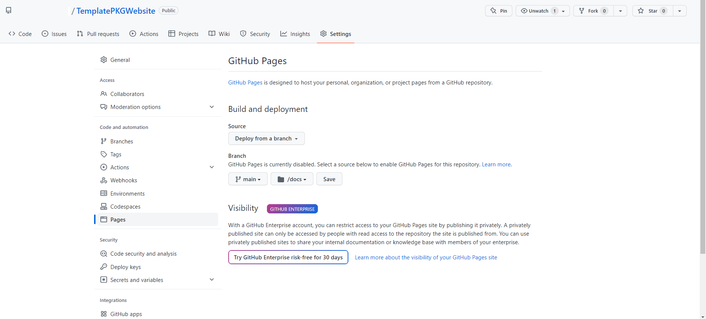

vignettes/how_to_build_pkgdown_website.Rmd
how_to_build_pkgdown_website.RmdIn this post, I try to outline the steps needed to create a website for your R package using the pkgdown package. In particular, I will show you how to get Travis-ci to automatically build the website and deploy it to your gh-pages branch on GitHub.
This tutorial assumes you have basic knowledge of Git commands pull, push, commit, and what a branch is. It also assumes working knowledge of R, and what continuous integration is. You must also have a GitHub account and have a GitHub Pages user site.
Note: the steps outlined below are a recollection of what I remember from recently doing the samething for our casebase R package. You can probably figure out most of this out using the documentation from the usethis, pkgdown and travis R packages. However, I found that certain pieces of information were missing or I had to search beyond these docs to make everything work. Please feel free to comment below if this tutorial doesn’t work for you.
install.packages(c("devtools","usethis","knitr","rmarkdown", "roxygen2", "pkgdown"))
# devtools::install_github("ropenscilabs/travis")* In your local Rstudio, create a local R pacakge (a very simple one) with a package name whichever you want. I created a package called `TemplatePKGWebsite`. My package is located in `Documents/Github/TemplatePKGWebsite`. You can do this with two following ways:
- Use R code to create R package
# setup R package structure
usethis::create_package("TemplatePKGWebsite") - Go into Rstudio > File > New Project > New Directory > R package
.Let’s initialize the project as a git repo, commit your changes, set the remote and push to the remote. There are many ways to accomplish this which I explain in my tutorial. Here I will use the command line to accomplish this:
Create a repository in Github. I named the repo as
TemplatePKGWebsite 
Push the R package folder to my remote repository.
cd Documents/Github/TemplatePKGWebsite
git status
git add --all
git commit -m "initial version of the R package"
git branch -M main
git remote add origin https://github.com/username/TemplatePKGWebsite.git
git push origin mainWith the below line of code, it will automatically pop-up a website
for the package TemplatePKGWebsite. This will create
/docs folder in the root of your package directory which
contains all the source files for your website.
# Run to build the website
pkgdown::build_site().
First, setup R package structure such ad README.md,
LICENSE.md, NEWS.md, and vignette files.
# created README.md for Github landing page
usethis::use_readme_md(open = FALSE)
# creates LICENSE.md file
usethis::use_mit_license("Jenny Lee")
# creates NEWS.md file
usethis::use_news_md(open = FALSE)
# create a vignettes folder and vignettes/first_vignette.Rmd
usethis::use_vignette("first_vignette")
# create a vignettes/how_to_build_pkgdown_website.Rmd
usethis::use_vignette("how_to_build_pkgdown_website")Note that the title of the vignette should be the same as what goes
into \VignetteIndexEntry{}.
title: "Creating a website for your R package: using pkgdown"
output: rmarkdown::html_vignette
vignette: >
%\VignetteIndexEntry{Creating a website for your R package: using pkgdown}
%\VignetteEngine{knitr::rmarkdown}
%\VignetteEncoding{UTF-8}Then, create a .gitignore file in the root of the
directory with the following two lines:
TemplatePKGWebsite.Rproj
.Rproj*Let’s check how the website looks like now. Note that now
article and changelog tab has been added.
# This will automatically open up your web browser with the built website
pkgdown::build_site()
Next we need to publish the website online, easy way using the
/docs folder. Note that this is not an automatic way which
requires you to build the website locally everytime you make a change to
the documentation or vignettes, and then push to github.
Commit the changes (the newly created /docs folder) and
push them to the remote (on the master branch):
git add --all
git commit -m "Customzie website and add vignettes"
git push origin mainThen head over to the Settings on your GitHub repo and scroll to the
GitHub Pages section and select master branch /docs folder
in the dropdown menu:
.
Your website is on live now on this address:
https://username.github.io/TemplatePKGWebsite/.
Simply re-build locally using pkgdown::build_site() and
then push to GitHub. GitHub Pages will then always use the files in the
/docs folder for the source code of your website.
roxygen2::roxygenise() converts roxygen
comments to .Rd files
There are three steps in the transformation from roxygen
comments in your source file to human readable documentation:
roxygen comments to your source file.roxygen2::roxygenise() converts roxygen comments to
.Rd files..Rd files to human readable
documentation.
roxygen2::roxygenise()